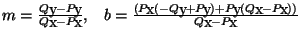

Com sigui que disposem de moltes representacions diferents d'una recta, pot caldre convertir entre diferents representacions. La següent taula ens dóna les conversions entre elles:
| de\a | Per 2 pnts. | Pt. i vector | Pt. i normal | Pendent i ordenada |
|---|---|---|---|---|
| Per 2 pnts. | v=Q-P | nx=-Qy+Py, ny=Qx-Px |  | |
| Pt. i vector | Q=P+v | n=(-vy, vx) | m=vy÷vx, b=Py- vyPx÷vx | |
| Pt. i normal | Q=P+(ny,-nx) | v=(ny,-nx) | m=-nx÷ny, b=Py+nxPx÷ny | |
| Pendent i ordenada | P=(0,b), Q=(1,b+m) | P=(0,b), v=(1,m) | P=(0,b), n=(-m,1) |